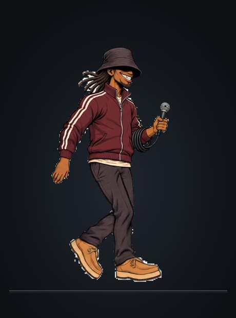
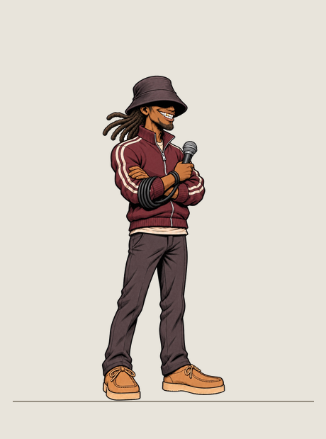
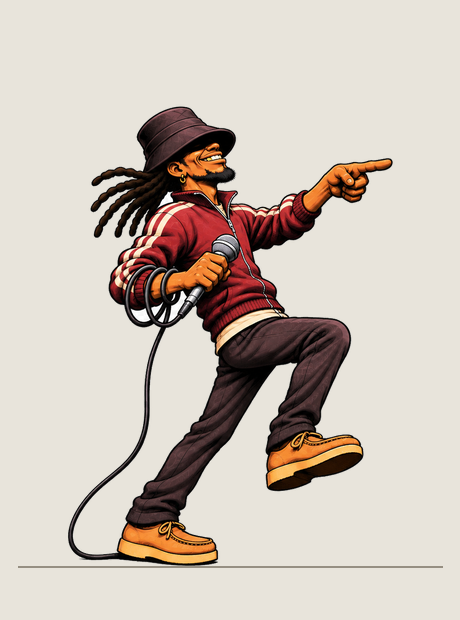
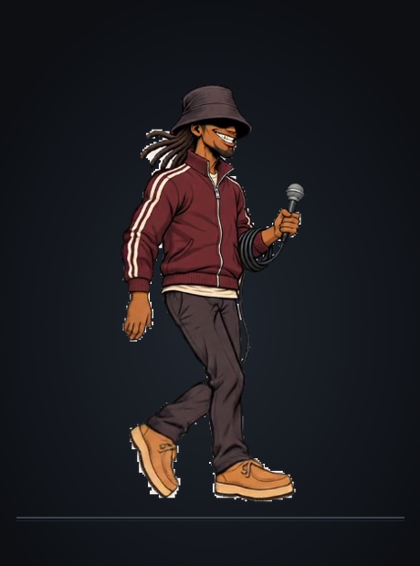
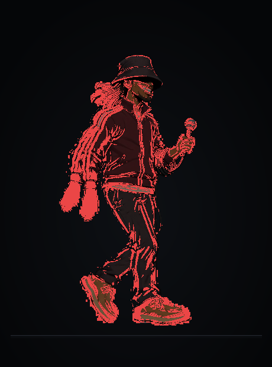

Loop seam — shown, not hidden


Changed pixels—
Ordinary frame step—
Mean diff on changed px—
Playback cuts straight from the last frame back to the first — no crossfade. This is a full two-step stride (two passing poses), and the best-closing one in the clip. The residual is a thin edge offset around the whole silhouette, heaviest at the feet, the swinging leg, the free hand and the cable loop — the source contains no frame pair that closes exactly, so a small hitch is visible at the cut.
What this is, and what is still wrong
- Source:
feedback-walk-flow-test.mp4(SHA-2567c644df6…4011), untouched. Frames — of the 238-frame clip, the best-closing complete stride found by scoring candidate spans after scale/floor alignment. - Timing: the clip is 24 fps content in a 30 fps stream. — pulldown duplicates (source —) were removed, leaving — frames at 24 fps = —.
- Alignment: one uniform scale for every frame (—), sole pinned to the floor line, body centred on the stride mean. Per-frame height normalisation was deliberately not used, so the natural vertical bounce survives.
- Defects carried over, not fixed: mic in the wrong (right) hand; cable plug present/absent between poses; almost no arm counter-swing, so the walk reads as a carry; no ground or shadow in the source, so foot sliding cannot be judged.
- Not integrated: no gameplay, world, or combat code touched; no experimental branches merged; no new media generated.